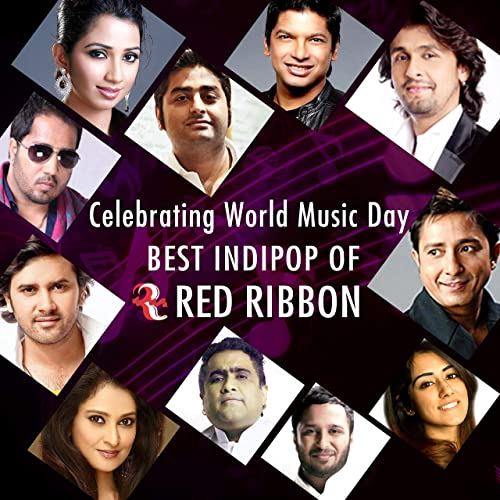

- India is a land of diverse culture and thus India has a huge variety of folk and regional music.
- Indian folk music is sung in various languages and dialects throughout the length and breath of this vast nation and exported to different parts of the world owing to migration.
- The Earliest records of Indian folk music are found in the Vedic literature, which dates back to 1500 BC.
- Some scholars and experts even suggest that the Indian folk music could be as old as the country itself
- Folk songs were extensively used for recreational purposes and to celebrate special events including weddings, birth of a child, festivals, etc.
- Folk songs were also used to pass on prominent information from one generation to another.
- Bihugeet in Assam,Lavani in Maharashtra,Bhavgeet in Karnataka,Zeliang in Nagaland and Garba in Gujarat are some of the finest folk music of India.


- The indie music scene in India is still underrated even after a lot of people knowing about it.
- Some of the best and most famous indie singers and bands are Prateek Kuhad,Ankur Tewari,When Chai Met Toast,The Local Train,Nucleya,Shirley Setia.
- Their famous songs are Kho gaye hum kaha,Cold mess,Dil beparwah, Aaoge tum kabhi,Khudi,Firefly, Beautiful world Yaaron,Laung gawacha,Jab koi baat.
- These songs are mesmerising and refreshing.
- The listeners of these songs feel a unique connect with these songs and thus they have loyal viewers.
- The videos made for these songs enhances the song quality by many folds.
- This kind of music is very famous in millennial generation.
- The bollywood music is the most popular in India.
- It has a huge audience due to the reach of bollywood not just in India but worldwide.
- Their songs are generally love songs while there may be one patriotic song like jai ho or a song from some other genre.
- The singers and composers that are ruling bollywood right now are Arijit Singh,Amit Trivedi,Tanishk Bagchi, Armaan Malik, Jubin Nautiyal,Neha Kakkar etc.
- Their songs have garnered millions of views on platforms like youtube and music apps like spotify,jio saavn,gaana etc.
- They have got great success with their latest releases.
- Some of their famous songs are Channa mereya,Tere yaar hoon main,Iktara,Love you zindagi,Tu hi yaar mera,Sawarne lage, Tum hi aana,Aankh marey,Mile ho tum etc.

- Some of the most popular Indian pop legends are Lata Mangeshkar,Kishore kumar,R.D. Burman ,Mohammad Rafi etc.
- These legends have made some of the most iconic songs for the industry like jai ho,yeh shaam mastani,lag jaa gale,zindagi ek safar hai suhana,tujhe dekha to ye jana,o mere dil ke chain and many more.
- Indian popular music depends on an amalgamation of Indian society and old-style music, and present-day beats from various pieces of the world.
- It has some great songs which have influenced a lot of Indians.
- Popular music truly began in the South Asian area with the playback artist Ahmed Rushdi and his melody Ko Korina in 1966.